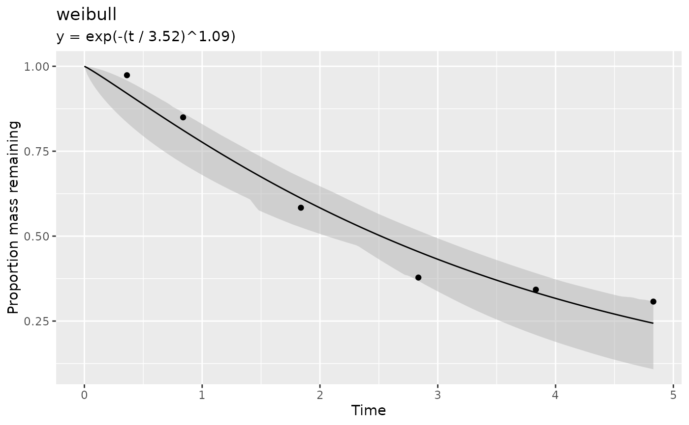
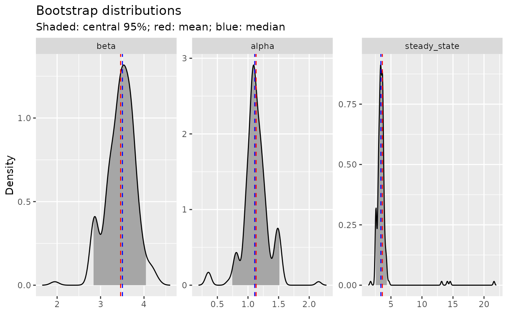
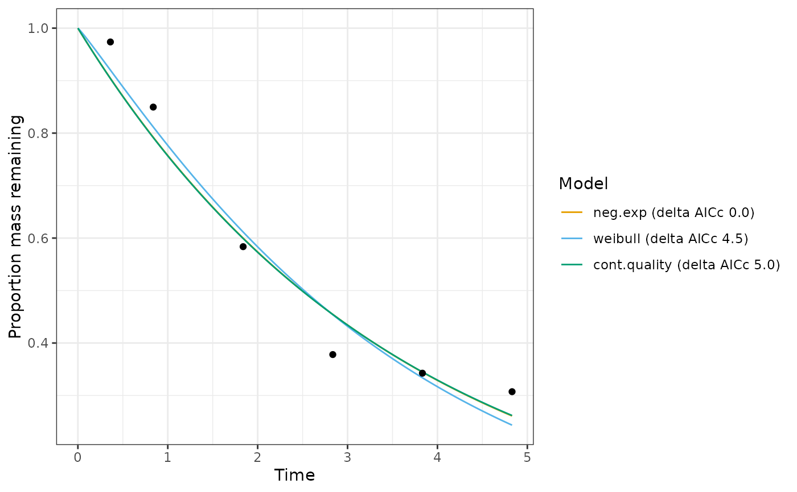

autoplot() methods that draw fits, model comparisons and bootstrap
distributions with ggplot2. They require ggplot2 to be installed and loaded
(library(ggplot2)); the result is a regular ggplot object that can be modified
with further layers, scales and themes.
Usage
# S3 method for class 'litfit'
autoplot(object, boot = NULL, conf.level = 0.95, equation = TRUE, n = 200, ...)
# S3 method for class 'elementfit'
autoplot(object, boot = NULL, conf.level = 0.95, equation = TRUE, n = 200, ...)
# S3 method for class 'litfit_list'
autoplot(object, boot = NULL, conf.level = 0.95, n = 200, ...)
# S3 method for class 'litfit_bootstrap'
autoplot(object, terms = NULL, conf.level = 0.95, ...)Arguments
- object
a
litfit,elementfit,litfit_listorlitfit_bootstrapobject- boot
optional
litfit_bootstrapfrombootstrap_parametersfor the same fit (for alitfit_list, a named list of them), to draw an uncertainty band- conf.level
confidence level for bands and shaded intervals (default 0.95)
- equation
if
TRUE, show the fitted equation as the subtitle- n
number of points used to draw curves
- ...
unused
- terms
for bootstraps, the parameters or derived quantities to show (default all)
Details
litfit: the data, fitted curve and (optionally) a bootstrap band, with the fitted equation as the subtitle.elementfit: as above, with mass remaining decreasing from left to right and a dashed line at the initial element amount.litfit_list: the curves of all models, coloured with the Okabe-Ito palette and labelled with their difference in AICc from the best model ("delta AICc").litfit_bootstrap: the bootstrap distribution of each parameter and derived quantity in its own panel, with the central interval shaded and lines at the mean (red) and median (blue).
See also
augment.litfit and tidy.litfit_bootstrap, which
return the data behind these plots for building custom figures;
plot.litfit for base graphics
Examples
library(ggplot2)
fit <- fit_litter(
time = pineneedles$Year, mass.remaining = pineneedles$Mass.remaining,
model = "weibull", iters = 100, quiet = TRUE
)
boot <- bootstrap_parameters(fit, nboot = 200)
autoplot(fit, boot = boot)

autoplot(boot)

fits <- fit_litter_all(pineneedles$Year, pineneedles$Mass.remaining,
models = c("neg.exp", "weibull", "cont.quality"), iters = 100
)
#> Warning: cont.quality: one or more parameters fit on the boundary (a), check fit closely
autoplot(fits) + theme_bw()
